A consistent portrait library made for the website, LinkedIn, press materials, and internal communications without asking every person to look the same.
40 portraits in this collection.
The complete collection
40 publicly used and approved portrait selections.
Featured portraits
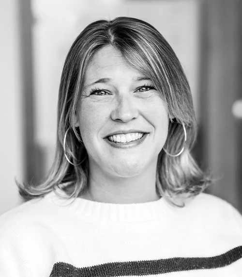
Amanda Seeholzer · EastRise leadership and board
Christin Canter · EastRise leadership and boardIan Squirrell · EastRise leadership and boardJim Towne · EastRise leadership and board
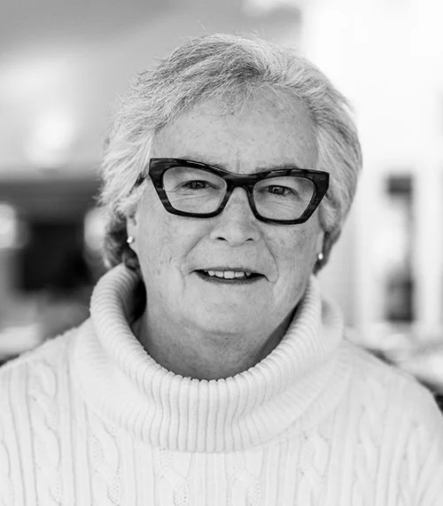
Kathleen S. Emery Ginn · EastRise leadership and board
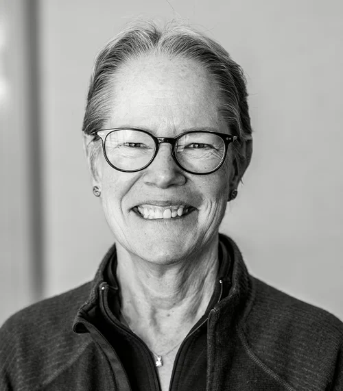
Margaret H. O’Donnell · EastRise leadership and board
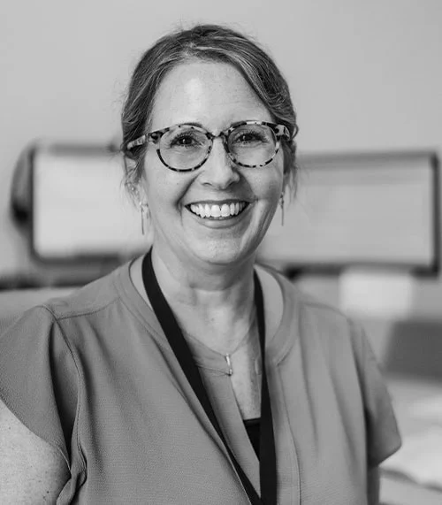
Penny Overton · EastRise leadership and boardRobert Miller · EastRise leadership and board
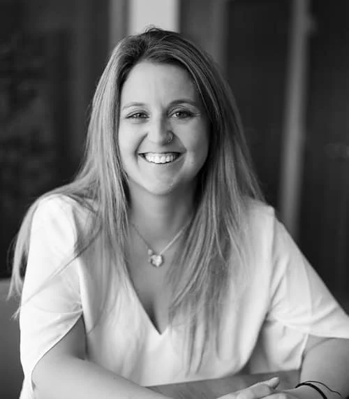
Shauna Allen · EastRise leadership and board
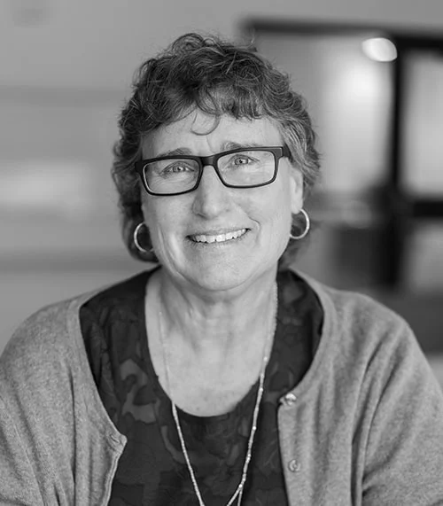
Valerie Beaudin · EastRise senior team
Yvonne Garand · Former EastRise senior vice president
More from the collection
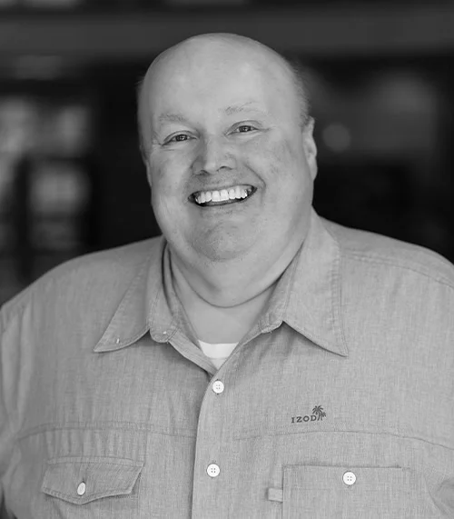
Alvah Newhall · EastRise leadership and board
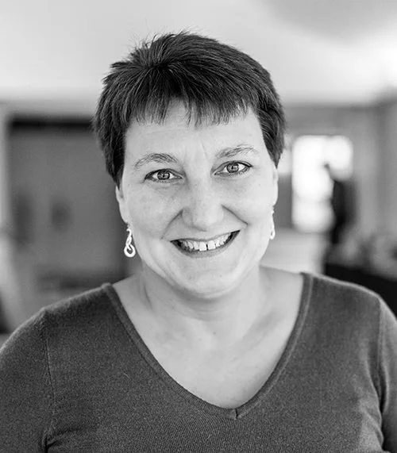
Amy Vaughan · EastRise leadership and board
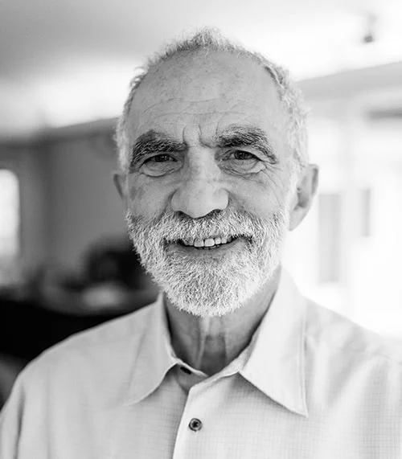
Arthur G. Woolf · EastRise leadership and board
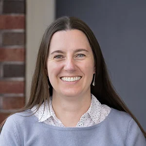
Caroline Cross · EastRise leadership and board
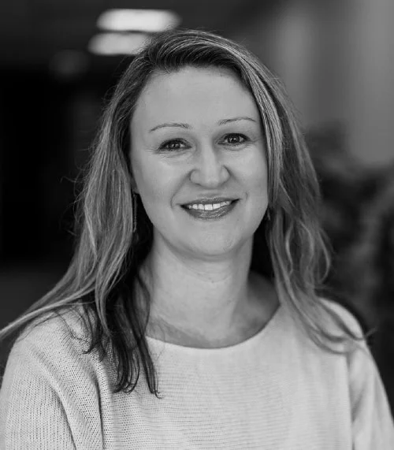
Christine Corbett · EastRise leadership and board
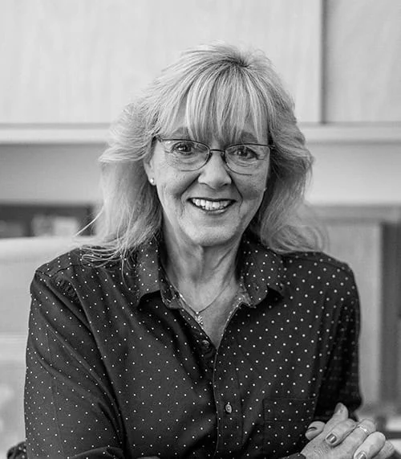
Deanna Carol · EastRise leadership and board
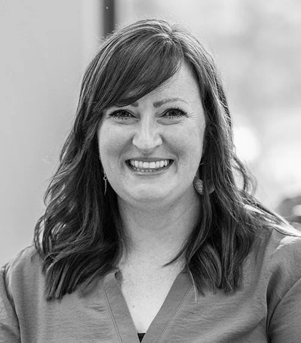
Danielle Whitcomb · EastRise leadership and board
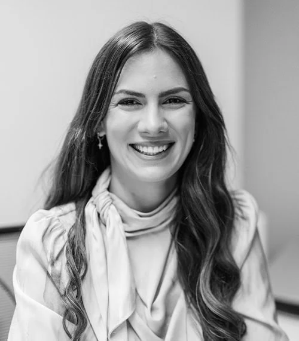
Denisa Yee · EastRise leadership and boardEmily Phelps · EastRise leadership and boardGeorge Sales · EastRise leadership and board
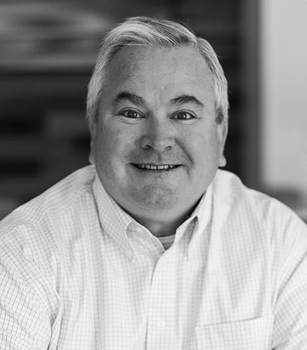
Greg Hahr · EastRise leadership and board
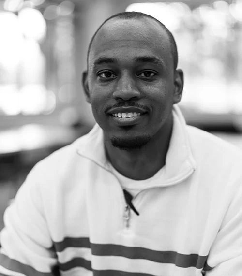
Ibby Wilson · EastRise leadership and boardJC Gepigon · EastRise leadership and boardJohn Dwyer · EastRise leadership and boardJulie Jorgensen · EastRise leadership and board
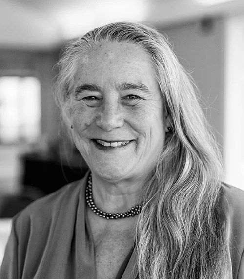
Julie Lineberger · EastRise leadership and boardLuke Buglion Gluck · EastRise leadership and board
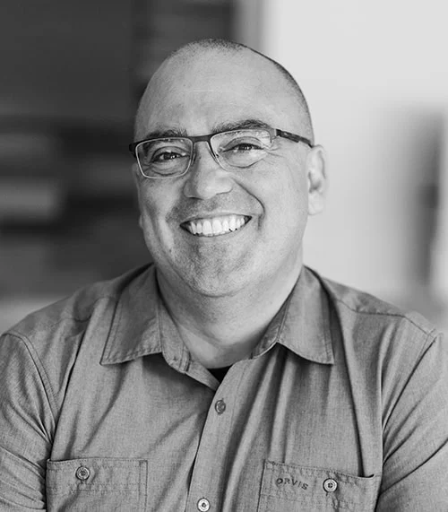
Mark Ackerly · EastRise leadership and boardMatt Sjoblom · EastRise leadership and board
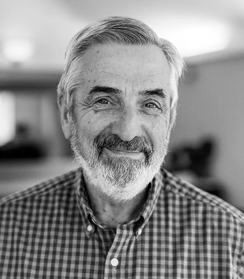
Michael Hogan · EastRise leadership and board
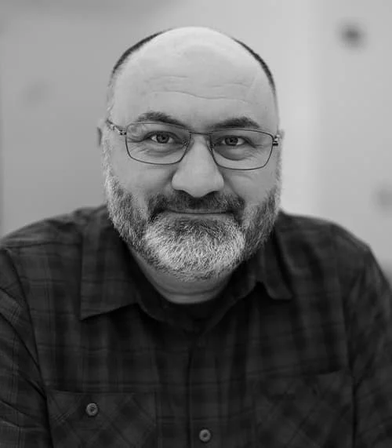
Rion Bleicher · EastRise leadership and board
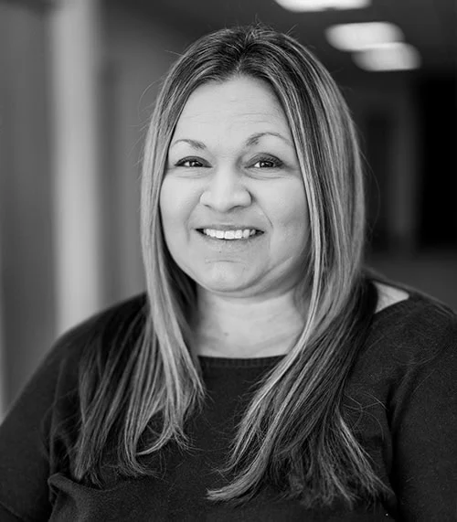
Sara Wright · EastRise leadership and board
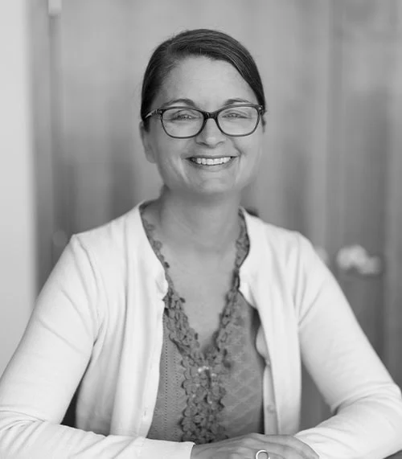
Sarah Spaulding · EastRise leadership and board
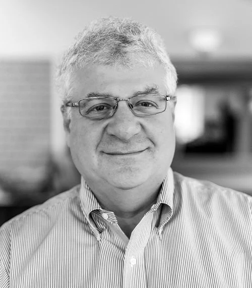
Spencer Newman · EastRise leadership and board
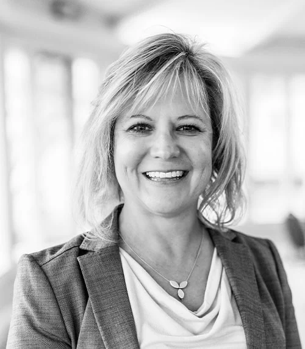
Stephanie Meunier · EastRise leadership and boardSubha Luck · EastRise leadership and boardSue Leonard · EastRise leadership and board
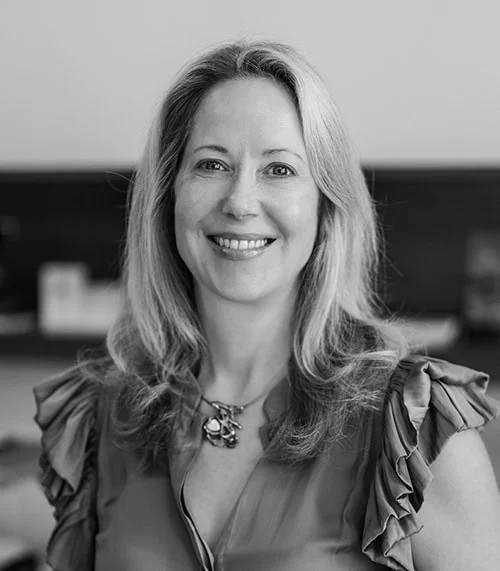
Elizabeth Morton · EastRise leadership and boardRick Hommel · EastRise leadership and board
The system behind the portraits
Consistent framing and a shared black-and-white treatment made the library useful across channels. Natural light, careful editing, and room for each person kept the portraits human.